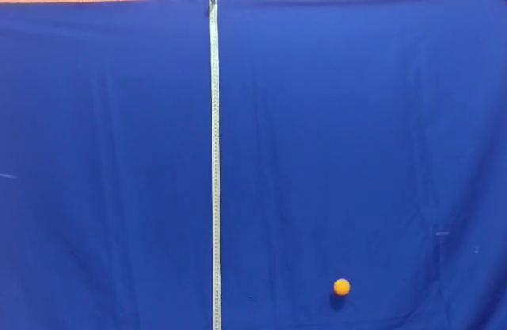

1.1 Pixels, canais e coordenadas
Uma imagem colorida de 640 × 416 pixels costuma chegar ao OpenCV como um array de formato (416, 640, 3): linhas, colunas e canais. Em imagens de 8 bits, cada intensidade está entre 0 e 255. Preto é intensidade zero; o valor máximo depende da codificação, não é uma medida direta da potência luminosa.
O índice é imagem[linha, coluna], ou imagem[y, x]. A origem está no canto superior esquerdo e y cresce para baixo. O OpenCV lê os canais em BGR; o Matplotlib espera RGB. Para trocar, use cv2.cvtColor(imagem, cv2.COLOR_BGR2RGB).

{kind=link}
Explore os canais. A grade abaixo é uma cena sintética reduzida, não um recorte do vídeo. Troque R, G e B e observe em qual canal a bolinha se destaca.
Aritmética também depende do tipo. Arrays uint8 do NumPy podem dar a volta ao ultrapassar 255. Algumas operações do OpenCV saturam nesse limite. Para diferenças entre quadros, use absdiff; para contas com resultados negativos, converta para ponto flutuante.
Veja o formato, um pixel e os canais separados. Troque a entrada por frame_papelao.png e compare com o fundo bege.
{kind=link}
python scripts/01_imagem.pyCódigo completo (20 linhas)
"""Execute na pasta do tópico: python scripts/01_imagem.py"""
import cv2
imagem = cv2.imread("imagens/frame_bolinha.png")
if imagem is None:
raise SystemExit("Não encontrei imagens/frame_bolinha.png.")
print("Linhas, colunas e canais:", imagem.shape)
print("Tipo dos valores:", imagem.dtype)
print("Pixel [linha 100, coluna 100] em BGR:", imagem[100, 100])
azul, verde, vermelho = cv2.split(imagem)
cinza = cv2.cvtColor(imagem, cv2.COLOR_BGR2GRAY)
cv2.imshow("Imagem colorida", imagem)
cv2.imshow("Canal azul", azul)
cv2.imshow("Canal vermelho", vermelho)
cv2.imshow("Cinza", cinza)
cv2.waitKey(0)
cv2.destroyAllWindows()1.2 Um vídeo é uma sequência de imagens
O laço essencial tem três ações: ler, processar, mostrar. read() devolve um indicador de sucesso e o quadro. Testar esse indicador evita processar uma imagem inexistente no fim do vídeo.
leu, quadro = video.read()
if not leu:
break
cv2.imshow("Captura", quadro)Uma fonte 0 seleciona a primeira câmera; um caminho seleciona um arquivo. waitKey mantém a janela respondendo e permite sair. Seu atraso não mede o tempo físico da cena.
Para repetir sem webcam, baixe pendulo_livre.mp4 para a pasta videos.
python scripts/02_captura.py
python scripts/02_captura.py videos/pendulo_livre.mp4Código completo (22 linhas)
"""Sem argumento: webcam. Com argumento: caminho de um vídeo. Q encerra."""
import sys
import cv2
fonte = 0
if len(sys.argv) > 1:
fonte = sys.argv[1]
video = cv2.VideoCapture(fonte)
if not video.isOpened():
raise SystemExit("Não foi possível abrir a câmera ou o vídeo.")
while True:
leu, quadro = video.read()
if not leu:
break
cv2.imshow("Captura", quadro)
if cv2.waitKey(30) == ord("q"):
break
video.release()
cv2.destroyAllWindows()1.3 Movimento por diferença
Subtraia quadros consecutivos em cinza e tome o valor absoluto. Depois escolha um limiar: diferenças maiores ficam brancas; as outras ficam pretas.
\[D_t(x,y)=|I_t(x,y)-I_{t-1}(x,y)|\]
O método destaca mudança, não identidade. Uma câmera que treme ou uma lâmpada que pisca também altera pixels. Nos extremos do pêndulo, a velocidade cai e a diferença pode desaparecer justamente onde queremos medir a posição.
Altere LIMIAR e veja o compromisso entre ruído e movimento perdido.
python scripts/03_movimento.pyCódigo completo (26 linhas)
"""Diferença de quadros. Execute na pasta do tópico. Q encerra."""
import cv2
FONTE = "videos/pendulo_livre.mp4" # Use 0 para a webcam.
LIMIAR = 12
video = cv2.VideoCapture(FONTE)
leu, quadro = video.read()
if not leu:
video.release()
raise SystemExit("Não foi possível ler o primeiro quadro.")
anterior = cv2.cvtColor(quadro, cv2.COLOR_BGR2GRAY)
while True:
leu, quadro = video.read()
if not leu:
break
atual = cv2.cvtColor(quadro, cv2.COLOR_BGR2GRAY)
diferenca = cv2.absdiff(atual, anterior)
_, mascara = cv2.threshold(diferenca, LIMIAR, 255, cv2.THRESH_BINARY)
anterior = atual
cv2.imshow("Movimento", mascara)
if cv2.waitKey(30) == ord("q"):
break
video.release()
cv2.destroyAllWindows()Investigue: a diferença marca toda a bolinha ou principalmente as regiões que ela deixou e passou a ocupar?
1.4 Cor, HSV e máscara
HSV reorganiza a informação: H é matiz, S é saturação e V é valor. No formato de 8 bits do OpenCV, H vai de 0 a 179 e S/V de 0 a 255. Essa separação facilita definir uma faixa de cor, mas não elimina reflexos, sombras e variações de iluminação.
hsv = cv2.cvtColor(quadro, cv2.COLOR_BGR2HSV)
mascara = cv2.inRange(hsv, (0, 120, 120), (25, 255, 255))
resultado = cv2.bitwise_and(quadro, quadro, mask=mascara)A máscara contém 0 ou 255; o resultado mantém a imagem original onde a máscara passou. A faixa acima foi escolhida para a bolinha laranja deste acervo. Outra cor ou iluminação pede nova calibração.
Explore: abra os limites e reduza H; depois aumente S mínimo para retirar a trena clara. Compare a cena sintética com a máscara.
Os sliders agora trabalham numa imagem real fixa. Ao sair, anote os limites impressos e copie para MINIMO/MAXIMO nos exemplos seguintes.
python scripts/04_cor.pyCódigo completo (36 linhas)
"""Ajuste HSV numa imagem fixa. Anote as faixas para os exemplos 05 e 06."""
import cv2
imagem = cv2.imread("imagens/frame_bolinha.png")
if imagem is None:
raise SystemExit("Não encontrei a imagem. Execute na pasta do tópico.")
hsv = cv2.cvtColor(imagem, cv2.COLOR_BGR2HSV)
def mudou(valor: int) -> None:
pass # A leitura dos controles ocorre no laço abaixo.
cv2.namedWindow("Filtro HSV")
controles = [("Hmin", 0, 179), ("Hmax", 25, 179),
("Smin", 120, 255), ("Smax", 255, 255),
("Vmin", 120, 255), ("Vmax", 255, 255)]
for nome, valor, maximo in controles:
cv2.createTrackbar(nome, "Filtro HSV", valor, maximo, mudou)
while True:
hmin = cv2.getTrackbarPos("Hmin", "Filtro HSV")
hmax = cv2.getTrackbarPos("Hmax", "Filtro HSV")
smin = cv2.getTrackbarPos("Smin", "Filtro HSV")
smax = cv2.getTrackbarPos("Smax", "Filtro HSV")
vmin = cv2.getTrackbarPos("Vmin", "Filtro HSV")
vmax = cv2.getTrackbarPos("Vmax", "Filtro HSV")
mascara = cv2.inRange(hsv, (hmin, smin, vmin), (hmax, smax, vmax))
resultado = cv2.bitwise_and(imagem, imagem, mask=mascara)
cv2.imshow("Filtro HSV", resultado)
cv2.imshow("Mascara", mascara)
if cv2.waitKey(30) == ord("q"):
break
print("Mínimo:", (hmin, smin, vmin), "Máximo:", (hmax, smax, vmax))
cv2.destroyAllWindows()Um objeto diferente com a mesma cor também passa. Vermelho cruza a emenda de H: pode exigir duas faixas, unidas com bitwise_or. Pequenas manchas podem ser removidas com uma abertura morfológica, mas só acrescente essa etapa quando o ruído realmente aparecer.
1.5 Da região ao ponto
Contornos descrevem as bordas das regiões brancas. Neste cenário, escolhemos o maior contorno acima de uma área mínima e obtemos o centro do menor círculo que o envolve. A hipótese é que a bolinha seja a maior região da cor escolhida.
O script mostra a bolinha marcada e imprime centro e raio em pixels.
python scripts/05_posicao.pyCódigo completo (28 linhas)
"""Da máscara ao centro da bolinha. Q ou qualquer tecla encerra a imagem."""
import cv2
MINIMO = (0, 120, 120)
MAXIMO = (25, 255, 255)
AREA_MINIMA = 30
imagem = cv2.imread("imagens/frame_bolinha.png")
if imagem is None:
raise SystemExit("Não encontrei a imagem. Execute na pasta do tópico.")
hsv = cv2.cvtColor(imagem, cv2.COLOR_BGR2HSV)
mascara = cv2.inRange(hsv, MINIMO, MAXIMO)
contornos, _ = cv2.findContours(mascara, cv2.RETR_EXTERNAL, cv2.CHAIN_APPROX_SIMPLE)
if contornos:
maior = max(contornos, key=cv2.contourArea)
if cv2.contourArea(maior) > AREA_MINIMA:
(x, y), raio = cv2.minEnclosingCircle(maior)
print(f"Centro: x={x:.1f} px, y={y:.1f} px; raio={raio:.1f} px")
cv2.circle(imagem, (int(x), int(y)), int(raio), (0, 255, 0), 2)
else:
print("A região é menor que a área mínima.")
else:
print("Nenhuma região encontrada nessa faixa de cor.")
cv2.imshow("Posicao", imagem)
cv2.waitKey(0)
cv2.destroyAllWindows()Contorno ou Hough?
minEnclosingCircle envolve uma região já segmentada. HoughCircles procura evidência de uma circunferência a partir de bordas, com parâmetros de raio e limiares. Um não é universalmente melhor: compare os métodos quando a bolinha estiver borrada, parcialmente oculta ou tiver cor próxima ao fundo.
Investigue: coloque uma região laranja maior na cena. O algoritmo ainda localiza a bolinha? Essa falha mostra qual hipótese precisamos revisar.
Referências e próxima etapa
- OpenCV: captura de vídeo.
- OpenCV: espaços de cor.
- OpenCV: características de contornos.
- Sequência original, etapas 01–05.
Agora podemos repetir a detecção em cada quadro e guardar uma tabela de posições.